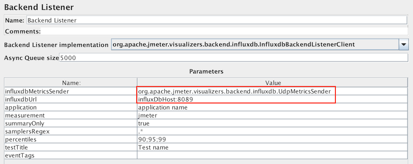
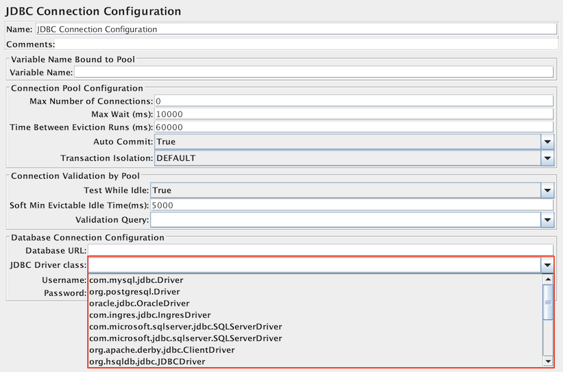
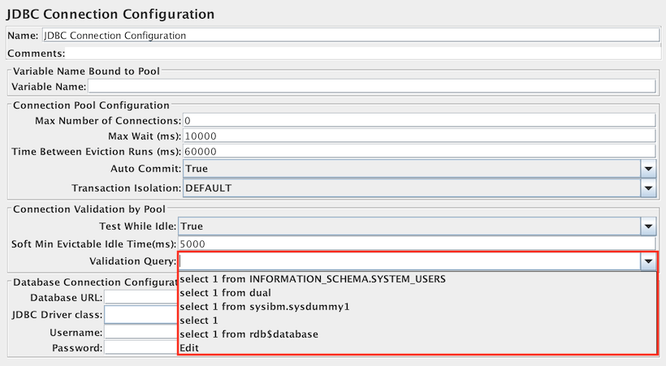
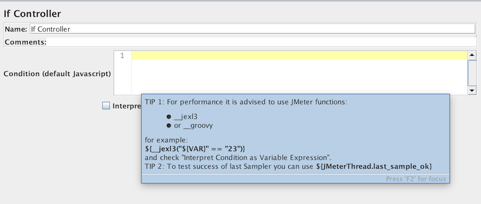
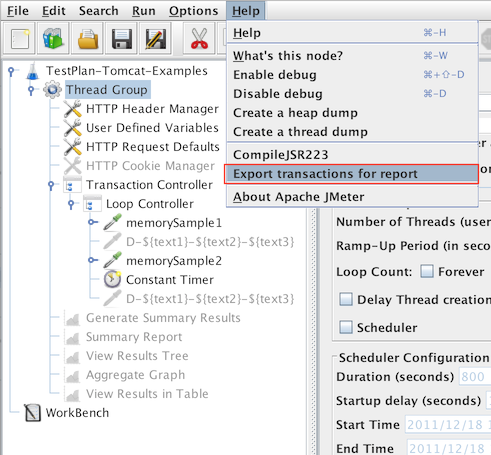
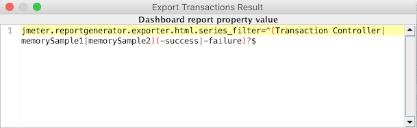
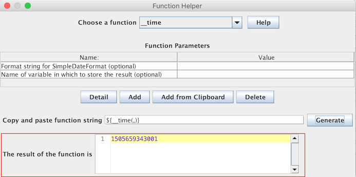
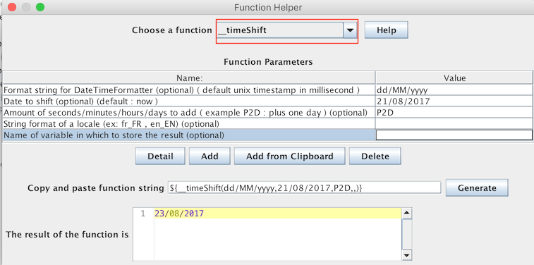
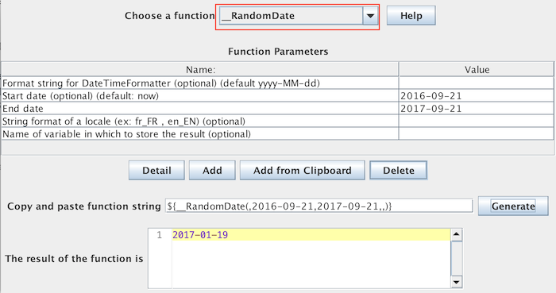

Changes sections are chronologically ordered from top (most recent) to bottom
(least recent)
Version 2.3.1
Summary of changes
JMeter Proxy
The Proxy spoof function was broken in 2.3; it has been fixed.
Spoof now supports an optional parameter to limit spoofing to particular URLs.
This is useful for HTTPS pages that have insecure content - e.g. images/stylesheets may be accessed using HTTP.
Spoofed responses now drop the default port (443) from https links to make them work better.
Ignored proxy samples are now visible in Listeners - the label is enclosed in [ and ] as an indication.
Proxy documentation has been improved.
GUI changes
The Add menus show element types in the order in which they are processed
- see
Test Plan Execution Order
.
It is no longer possible to add test elements to inappropriate parts of the tree
- e.g. samplers cannot be added directly under a test plan.
This also applies to Paste and drag and drop.
The File menu now supports a "Revert" option, which reloads the current file.
Also the last few file names used are remembered for easy reloading.
The Options Menu now supports Collapse All and Expand All items to collapse and expand the test tree.
Remote testing
The JMeter server now starts the RMI server directly (by default).
This simplifies testing, and means that the RMI server will be stopped when the server stops.
Functions can now be used in Listener filenames (variables do not work).
Command-line option -G can now be used to define properties for remote servers.
Option -X can be used to stop a remote server after a non-GUI run.
Server can be set to automatically exit after a single test (set property server.exitaftertest=true).
Other enhancements
JMeter startup no longer loads as many classes; this should reduce memory requirements.
Parameter and file support added to all BeanShell elements.
Javascript function now supports access to JMeter objects;
Jexl function always did have access, but the documentation has now been included.
New functions __eval() and __evalVar() for evaluating variables.
CSV files with the correct header column names are now automatically recognised when loaded.
There is no need to configure the properties.
The hostname can now be saved in CSV and XML output files.
New "Successes only" option added when saving result files.
Errors / Successes only option is now supported when loading XML and CSV files.
General documentation improvements.
HTTP
PUT and DELETE should now work properly.
Cookie Manager no longer clears manually entered cookies.
Now handles the META tag http-equiv charset
JDBC
JDBC Sampler now allows INOUT and OUT parameters for Called procedures.
JDBC Sampler now allows per-thread connections.
Incompatible changes
JMeter server now creates the RMI registry by default.
If the RMI registry has already been started externally, this will generate a warning message, but the server will continue.
This should not affect JMeter testing.
However, if you are also using the RMI registry for other applications there may be problems.
For example, when the JMeter server shuts down it will stop the RMI registry.
Also user-written command files may need to be adjusted (the ones supplied with JMeter have been updated).
To revert to the earlier behaviour, define the JMeter property:
server.rmi.create=false
.
The Proxy server removes If-Modified-Since and If-None-Match headers from generated Header Managers.
To revert to the previous behaviour, define the property proxy.headers.remove with no value
Bug fixes
Bug 43430 - Count of active threads is incorrect for remote samples
Throughput Controller was not working for "all thread" counts
If a POST body is built from parameter values only, these are now encoded if the checkbox is set.
Bug 43584 - Assertion Failure Message contains a comma that is also used as the delimiter for CSV files
HTTP Mirror Server now always returns the exact same content, it used to return incorrect data if UTF-8 encoding was used for HTTP POST body, for example
Bug 43612 - HTTP PUT does not honor request parameters
Bug 42012 - Variable Listener filenames do not get processed in remote tests.
Filenames can now include function references; variable references do not work.
Ensure Listener nodes get own save configuration when copy-pasted
Correct Proxy Server include and exclude matching description - port and query are included, contrary to previously documented.
Aggregate Graph and Aggregate Report Column Header is KB/Sec; fixed the values to be KB rather than bytes
Fix SamplingStatCalculator so it no longer adds elapsed time to endTime, as this is handled by SampleResult.
This corrects discrepancies between Summary Report and Aggregate Report throughput calculation.
Default HTTPSampleResult to ISO-8859-1 encoding
Fix default encoding for blank encoding
Fix Https spoofing (port problem) which was broken in 2.3
Fix HTTP (Java) sampler so http.java.sampler.retries means retries, i.e. does not include initial try
Fix SampleResult dataType checking to better detect TEXT documents
Improvements
Add run_gui Ant target, to package and then start the JMeter GUI from Ant
Add File->Revert to easily drop the current changes and reload the project file currently loaded
Bug 31366 - Remember recently opened file(s)
Bug 43351 - Add support for Parameters and script file to all BeanShell test elements
SaveService no longer needs to instantiate classes
New functions: __eval() and __evalVar()
Menu items now appear in execution order
Test Plan items can now only be dropped/pasted/merged into parts of the tree where they are allowed
Property Display to show the value of System and JMeter properties and allow them to be changed
Bug 43451 - Allow Regex Extractor to operate on Response Code/Message
JDBC Sampler now allows INOUT and OUT parameters for Called procedures
JDBC Sampler now allows per-thread connections
Cookie Manager not longer clears cookies defined in the GUI
HTTP Parameters without names are ignored (except for POST requests with no file)
"Save Selection As" added to main menu; now checks only item is selected
Test Plan now has Paste menu item (paste was already supported via ^V)
If the default delimiter does not work when loading a CSV file, guess the delimiter by analysing the header line.
Add optional "loopback" protocol for HttpClient sampler
HTTP Mirror Server now supports blocking waiting for more data to appear, if content-length header is present in request
HTTP Mirror Server GUI now has the Start and Stop buttons in a more visible place
Server mode now creates the RMI registry; to disable set the JMeter property server.rmi.create=false
HTTP Sampler now supports using MIME Type field to specify content-type request header when body is constructed from parameter values
Enable exit after a single server test - define JMeter property server.exitaftertest=true
Added -G option to set properties in remote servers
Added -X option to stop remote servers after non-GUI run
Bug 43485 - Ability to specify keep-alive on SOAP/XML-RPC request
Bug 43678 - Handle META tag http-equiv charset
Bug 42555 - [I18N] Proposed corrections for the french translation
Bug 43727 - Test Action does not support variables or functions
The Proxy server removes If-Modified-Since and If-None-Match headers from generated Header Managers by default.
To change the list of removed headers, define the property proxy.headers.remove as a comma-separated list of headers to remove
The javaScript function now has access to JMeter variables and context etc. See
JavaScript function
Use drop-down list for BSF Sampler language field
Add hostname to items that can be saved in CSV and XML output files.
Errors only flag is now supported when loading XML and CSV files
Ensure ResultCollector uses SaveService encoding
Proxy now rejects attempts to use it with https
Proxy spoofing can now use RE matching to determine which urls to spoof (useful if images are not https)
Proxy spoofing now drops the default HTTPS port (443) when converting https: links to http:
Add Successes Only logging and display
The JMeter log file name is formatted as a SimpleDateFormat (applied to the current date) if it contains paired single-quotes, .e.g. 'jmeter_'yyyyMMddHHmmss'.log'
Added Collapse All and Expand All Option menu items
Allow optional definition of extra content-types that are viewable as text
Non-functional Improvements
Functor code tightened up; Functor can now be used with interfaces, as well as pre-defined targets and parameters.
Save graphics function now prompts before overwriting an existing file
Debug Sampler and Debug PostProcessor added.
Fixed up method names in Calculator and SamplingStatCalculator
Tidied up Listener documentation.
Version 2.3
Fixes since 2.3RC4
Bug fixes
Fix NPE in SampleResultConverter - XStream PrettyPrintWriter cannot handle nulls
If Java HTTP sampler sees null ResponseMessage, replace with HTTP header
Bug 43332 - 2.3RC4 does not clear Guis based on TestBean
Bug 42948 - Problems with Proxy gui table fields in Java 1.6
Fixup broken jmeter-server script
Bug 43364 - option to revert If Controller to pre 2.3RC3 behaviour
Bug 43449 - Statistical Remote mode does not handle Latency
Bug 43450 (partial fix) - Allow SampleCount and ErrorCount to be saved to/restored from files
Improvements
Add nameSpace option to XPath extractor
Add NULL parameter option to JDBC sampler
Add documentation links for Rhino and BeanShell to functions; clarify variables and properties
Ensure uncaught exceptions are logged
Look for user.properties and system.properties in JMeter bin directory if not found locally
Fixes since 2.3RC3
Fixed NPE in Summariser (bug introduced in 2.3RC3)
Fixed setup of proxy port (bug introduced in 2.3RC3)
Fixed errors when running non-GUI on a headless host (bug introduced in 2.3RC3)
Bug 43054 - SSLManager causes stress tests to saturate and crash (bug introduced in 2.3RC3)
Clarified HTTP Request Defaults usage of the port field
Bug 43006 - NPE if icon.properties file not found
Bug 42918 - Size Assertion now treats an empty response as having zero length
Bug 43007 - Test ends before all threadgroups started
Fix possible NPE in HTTPSampler2 if 302 does not have Location header.
Bug 42919 - Failure Message blank in CSV output [now records first non-blank message]
Add link to Extending JMeter PDF
Allow for quoted charset in Content-Type parsing
Bug 39792 - ClientJMeter synchronisation needed
Bug 43122 - GUI changes not always picked up when short-cut keys used (bug introduced in 2.3RC3)
Bug 42947 - TestBeanGUI changes not picked up when short-cut keys used
Added serializer.jar (needed for update to xalan 2.7.0)
Bug 38687 - Module controller does not work in non-GUI mode
Bug 43283 - Save action adds .jmx if not present; checks for existing file on Save As
Control+A key does not work for Save All As; changed to Control+Shift+S
Bug 40991 - Allow Assertions to check Headers
Version 2.3RC3
Known problems/restrictions:
The JMeter remote server does not support multiple concurrent tests - each remote test should be run in a separate server.
Otherwise tests may fail with random Exceptions, e.g. ConcurrentModification Exception in StandardJMeterEngine.
See bug 43168.
The default HTTP Request (not HTTPClient) sampler may not work for HTTPS connections via a proxy.
This appears to be due to a Java bug, see
Bug 39337
.
To avoid the problem, try a more recent version of Java, or switch to the HTTPClient version of the HTTP Request sampler.
Transaction Controller parent mode does not support nested Transaction Controllers.
Doing so may cause a Null Pointer Exception in TestCompiler.
Thread active counts are always zero in CSV and XML files when running remote tests.
The property file_format.testlog=2.1 is treated the same as 2.2.
However JMeter does honour the 3 testplan versions.
Bug 22510 - JMeter always uses the first entry in the keystore.
Remote mode does not work if JMeter is installed in a directory where the path name contains spaces.
BeanShell test elements leak memory.
This can be reduced by using a file instead of including the script in the test element.
Variables and functions do not work in Listeners in client-server (remote) mode so they cannot be used
to name log files in client-server mode.
CSV Dataset variables are defined after configuration processing is completed,
so they cannot be used for other configuration items such as JDBC Config.
(see
Bug 40394
)
Summary of changes (for more details, see below)
Some of the main enhancements are:
Htmlparser 2.0 now used for parsing
HTTP Authorisation now supports domain and realm
HttpClient options can be specified via httpclient.parameters file
HttpClient now behaves the same as Java Http for SSL certificates
HTTP Mirror Server to allow local testing of HTTP samplers
HTTP Proxy supports XML-RPC recording, and other proxy improvements
__V() function allows support of nested variable references
LDAP Ext sampler optionally parses result sets and supports secure mode
FTP Sampler supports Ascii/Binary mode and upload
Transaction Controller now optionally generates a Sample with subresults
HTTPS session contexts are now per-thread, rather than shared. This gives better emulation of multiple users
BeanShell elements now support ThreadListener and TestListener interfaces
Coloured icons in Tree View Listener and elsewhere to better differentiate failed samples.
The main bug fixes are:
HTTPS (SSL) handling now much improved
Various Remote mode bugs fixed
Control+C and Control+V now work in the test tree
Latency and Encoding now available in CSV log output
Test elements no longer default to previous contents; test elements no longer cleared when changing language.
Incompatible changes (usage):
N.B. The javax.net.ssl properties have been moved from jmeter.properties to system.properties,
and will no longer work if defined in jmeter.properties.
The new arrangement is more flexible, as it allows arbitrary system properties to be defined.
SSL session contexts are now created per-thread, rather than being shared.
This generates a more realistic load for HTTPS tests.
The change is likely to slow down tests with many SSL threads.
The original behaviour can be enabled by setting the JMeter property:
https.sessioncontext.shared=true
The LDAP Extended Sampler now uses the same panel for both Thread Bind and Single-Bind tests.
This means that any tests using the Single-bind test will need to be updated to set the username and password.
Bug 41140: JMeterThread behaviour was changed so that PostProcessors are run in forward order
(as they appear in the test plan) rather than reverse order as previously.
The original behaviour can be restored by setting the following JMeter property:
jmeterthread.reversePostProcessors=true
The HTTP Authorisation Manager now has extra columns for domain and realm,
so the temporary work-round of using '\' and '@' in the username to delimit the domain and realm
has been removed.
Control-Z no longer used for Remote Start All - this now uses Control+Shift+R
HttpClient now uses pre-emptive authentication.
This can be changed by setting the following:
JMeter does not yet support JAVA 9, next JMeter version will support it, you can help and follow progress on this item in
Bug
61529.
Using last minor version of JAVA 8 is advised to avoid facing any JDK bug.
Core improvements
HTTP Sampler now supports Brotli decompression.
CacheManager now completely supports Vary header.
InfluxDB BackendListener now supports sending results to InfluxDB through UDP protocol.

It has also been enhanced to send number of errors by response code and message for each transaction
Upgraded dependencies to last available versions bringing performance improvements and bug fixes
Continued to improve the quality of our code and tests coverage. See Quality report
UX improvements
More work has been done to better support HiDPI.
Some bugs, that crept in with the work on lowering the memory usage of View Results Tree, were fixed.
The constant DEFAULT_IMPLEMENTATION was removed from CookieManager,
as it lost it purpose with the removal of the alternate HTTP Client implementation in the last release
JDBC Sampler UX has been improved by adding select boxes for drivers and validation queries.

If Controller and While Controller UX have been improved

Report/Dashboard improvements
A new Help menu item has been added to simplify configuration of report generation.

Documentation improvements
Incorporated feedback about unclear documentation.
Functions
Function Helper Dialog: a new field that shows execution result has been added.

New functions:
__timeShift - return a date in various formats with the specified amount of seconds/minutes/hours/days added.

__RandomDate - generate random date within a specific date range.

Incompatible changes
In InfluxDbBackendListenerClient, statut property has been renamed to status
In CookieManager, DEFAULT_POLICY and DEFAULT_IMPLEMENTATION constants are now private.
If you're using ignorecookies with HC3CookieHandler (< JMeter 3.1) configuration will be reset, ensure you put it back.
JMeter will not truncate anymore by default responses exceeding 10 MB. If you want to enable this truncation, see property httpsampler.max_bytes_to_store_per_request
org.apache.jmeter.protocol.tcp.sampler.TCPClient.read(InputStream) has been deprecated in favor or org.apache.jmeter.protocol.tcp.sampler.TCPClient.read(InputStream, SampleResult),
ensure you update your implementation to be able to compute latency, see
Bug
60156
Removed elements or functions
_StringFromFile function has been dropped, use __StringFromFile instead
Bug
61135
-
CookieManager : Drop Implementation select box and cleanup class
Bug
61492
-
HTTP(S) Test Script Recorder : Add the possibility to change the value of proxy.pause in the GUI
Other samplers
Bug
61320
-
Test Action : Set duration to 0 by default
Bug
61504
-
JDBC Connection Configuration : Set Max Number of Connections to 0 by default
Bug
61505
-
JDBC Connection Configuration : Set "Validation Query" to empty by default to use isValid method of JDBC driver
Bug
61506
-
JDBC Connection Configuration : Add a list for main databases validation queries for "Validation Query" attribute
Bug
61507
-
JDBC Connection Configuration : Add a list for main databases JDBC driver class name for "JDBC Driver class" attribute
Bug
61525
-
OS Process Sampler : Add browser button to Command and Working directory fields
Bug
60156
-
TCPSampler : Latency is not measured for TCP Sampler. Contributed by Ubik Load Pack (support at ubikloadpack.com)
Bug
61039
-
CSV data set config : Add browser button to Filename field
Bug
61527
-
CSV data set config : Add a list for main file encoding values for File encoding attribute
Controllers
Bug
61131
-
IfController and WhileController : Improve UX
Listeners
Bug
61167
-
InfluxdbBackendListener : add number of errors by response code and message for each transaction
Bug
61068
-
Introduce property resultcollector.action_if_file_exists to control the popup "File already exists" when starting a test
Bug
61457
-
InfluxDB backend listener client : Support sending result to InfluxDB through UDP protocol. Partly based on
Pull request #302 by Junlong Wu (github id mybreeze77)
Bug
61126
-
Function Helper Dialog : Add a field that shows execution result
Bug
61508
-
Add a random date within a specific date range function
I18N
Bug
61509
-
Better label/translation/documentation for labels start and max for Counter element
Report / Dashboard
Bug
61481
-
Help Menu Item to export transaction for Web report
General
When looking for classes in ActionRouter, fall back to location of the jar,
where ActionRouter is loaded from. Provided by Emilian Bold (emi at apache.org)
Bug
61510
-
Set 'Max Number of Connections' to 0 into 'JDBC Connection Configuration' for the 'JDBC Load Test template'
Bug
61399
-
Make some bin and extras scripts Shellcheck compatible. Contributed by Wolfgang Wagner (internetwolf2000 at hotmail.com)
Non-functional changes
Updated to groovy 2.4.12 (from 2.4.10)
Updated to caffeine 2.5.5 (from 2.4.0)
Updated to commons-jexl3 3.1 (from 3.0)
Updated to ph-css 5.0.4 (from 5.0.3)
Updated to ph-commons 8.6.6 (from 8.6.0)
Updated to log4j2 2.8.2 (from 2.8.1)
Updated to xmlgraphics-commons 2.2 (from 2.1)
Updated to jodd 3.8.6 (from 3.8.1)
Updated to xstream 1.4.10 (from 1.4.9)
Updated to Apache Tika 1.16 (from 1.14)
Updated to jsoup-1.10.3 (from 1.10.2)
Updated to commons-lang3 3.6 (from 3.5)
Updated to json-path 2.4.0 (from 2.2.0)
Updated to httpcore 4.4.7 (from 4.4.6)
Bug
61438
-
Change the cryptographic signature of packages from sha-1 to sha-512
Bug fixes
HTTP Samplers and Test Script Recorder
Bug
61384
-
Don't set the charset on enclosing multipart/form-data header. It irritates some servers.
The charset was added sometime back while refactoring to use a newer API of http client.
See
Bug
56141
-
for more info.
Bug
61456
-
java.lang.ArrayIndexOutOfBoundsException when recording with JMeter and weird Basic Auth Authorization header
Bug
61395
-
Large server response truncation can impact recording
Other Samplers
Bug
60889
-
JMeter JDBC sample calls SELECT USER() when testing with MySQL JDBC due to Connection#toString call for response headers.
Bug
61259
-
JDBC Request : since JMeter 3.0, when JDBC auto-commit is false, a rollback statement happens each time a Request is executed. Partly contributed by Liu XP (liu_xp2003 at sina.com)
Bug
61319
-
Fix regression: SMTP Sampler could not send mails, when no attachments were specified.
Controllers
Bug
61375
-
Use system DNS resolver as last resort, when resolving entries in the static host table.
Listeners
Bug
61005
-
View Results Tree - Browser Response Data is not clearing
Bug
61121
-
InfluxdbBackendListenerClient: Only all percentiles are sent, not KO and OK
Bug
60961
-
Try to keep status of selected and expanded elements in View Results Tree when new elements are added.
Bug
61198
-
Backend Listener does not work properly in main script when included scripts also contain Backend Listener
Bug
61493
-
Max/Min threads are interchanged in Graphite and InfluxDB backend listener
Bug
58876
-
TestPlanName function returns null for a newly saved Test Plan and uses previously opened one for a new one
I18N
Report / Dashboard
Bug
61129
-
Report/Dashboard : If response code is empty but a failureMessage is present, Errors and Top 5 Errors are not accurate. Contributed by Ubik Load Pack (support at ubikloadpack.com)
Bug
61151
-
Report/Dashboard : Top 5 Errors by Sampler and Errors : If assertion contains html code, the html part is hidden
General
Bug
60743
-
Stopping / Shutting down Test might create a deadlock due to HTTPCORE-446, fixed by HttpCore upgrade to 4.4.7
Bug
61011
-
Replace occurrences count is not correct (Path and Host replacement are counted twice)
Bug
61026
-
Cannot run program "keytool": CreateProcess error=2 when starting JMeter 3.2 in GUI mode
Bug
61054
-
Endless loop in JOrphanUtils#replaceAllWithRegex when regex is contained in replacement
Bug
60995
-
HTTP Test Script Recorder: Port field is very small under some L&F
Bug
61073
-
HTTP(S) Test Script Recorder panel have some fields with bad size on HiDPI screen or GTK+ L&F on Linux/XWayland
Bug
57958
-
Fix transaction sample not generated if thread stops/restarts. Implemented by Artem Fedorov (artem at blazemeter.com) and contributed by BlazeMeter Ltd.
Bug
61050
-
Handle uninitialized RessourceBundle more gracefully, when calling JMeterUtils#getResString.
We also thank bug reporters who helped us improve JMeter.
For this release we want to give special thanks to the following reporters for the clear reports and tests made after our fixes:
The Once Only controller behaves correctly under a Thread Group or Loop Controller,
but otherwise its behaviour is not consistent (or clearly specified).
The numbers that appear to the left of the green box are the number of active threads / total number of threads,
the total number of threads only applies to a locally run test, otherwise it will show 0 (see
Bug
55510).
Note that under some windows systems you may have this WARNING:
java.util.prefs.WindowsPreferences
WARNING: Could not open/create prefs root node Software\JavaSoft\Prefs at root 0
x80000002. Windows RegCreateKeyEx(…) returned error code 5.
The fix is to run JMeter as Administrator, it will create the registry key for you, then you can restart JMeter as a normal user and you won't have the warning anymore.
You may encounter the following error:
java.security.cert.CertificateException: Certificates does not conform to algorithm constraints
if you run a HTTPS request on a web site with a SSL certificate (itself or one of SSL certificates in its chain of trust) with a signature
algorithm using MD2 (like md2WithRSAEncryption) or with a SSL certificate with a size lower than 1024 bits.
This error is related to increased security in Java 8+.
To allow you to perform your HTTPS request, you can downgrade the security of your Java installation by editing
the Java jdk.certpath.disabledAlgorithms property. Remove the MD2 value or the constraint on size, depending on your case.
This property is in this file:
Under Mac OSX Aggregate Graph will show wrong values due to mirroring effect on numbers.
This is due to a known Java bug, see Bug JDK-8065373
The fix is to use JDK8_u45 or later.
View Results Tree may fail to display some HTML code under HTML renderer, see
Bug
54586.
This is due to a known Java bug which fails to parse "px" units in row/col attributes.
See Bug JDK-8031109
The fix is to use JDK9 b65 or later.
JTable selection with keyboard (SHIFT + up/down) is totally unusable with Java 7 on Mac OSX.
This is due to a known Java bug JDK-8025126
The fix is to use JDK 8 b132 or later.
Fixed bug that caused cookies not to be read if header name case not as expected.
Clone entries before sending to sampler - prevents relocations from messing up
information across threads
Minor bug fix to convenience dialog for adding paramters to test sample.
Bug prevented entries in dialog from appearing in test sample.
Added xerces.jar to distribution
Added junit.jar to distribution and created a few tests.
Started work on new framework. New files in cvs, but do not effect program yet.
Fixed bug that prevent HTTPJMeterThread from delaying according to chosen timer.
Version 1.5
Abstracted out the concept of the Sampler, SamplerController, and TestSample.
A Sampler represents code that understands a protocol (such as HTTP,
or FTP, RMI, SMTP, etc..). It is the code that actually makes the
connection to whatever is being tested. A SamplerController
represents code that understands how to organize and run a group
of test samples. It is what binds together a Sampler and its test
samples and runs them. A TestSample represents code that understands
how to gather information from the user about a particular test.
For a website, it would represent a URL and any information to be sent
with the URL.
The UI has been updated to make entering test samples more convenient.
Thread groups have been added, allowing a user to setup multiple test to run
concurrently, and to allow sharing of test samples between those tests.
Cleaned up URLSampler code after tons of patches for better readability. (SM)
Made JMeter send a special "user-agent" identifier. (SM)
Fixed problems with redirection not sending cookies and authentication info and removed
a warning with jikes compilation. Thanks to
Wesley
Tanaka
for the patches (SM)
Fixed a bug in the URLSampler that caused to skip one URL when testing lists of URLs and
a problem with Cookie handling. Thanks to
Graham Johnson
for the patches (SM)
Fixed a problem with POST actions. Thanks to
Stephen
Schaub
for the patch (SM)
Created the opportunity to create URL aliasing from the properties file as well as the
ability to associate aliases to URL sequences instead of single URLs (SM) Thanks to
Simon Chatfield
for the very nice suggestions
and code examples.
Removed the TextVisualizer and replaced it with the much more useful FileVisualizer (SM)

{kind=link}
{kind=link}
{kind=link}
{kind=link}
{kind=link}
{kind=link}
{kind=link}
{kind=link}
{kind=link}